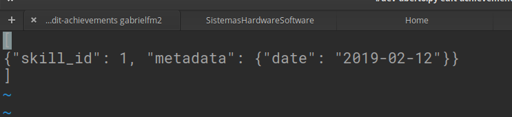
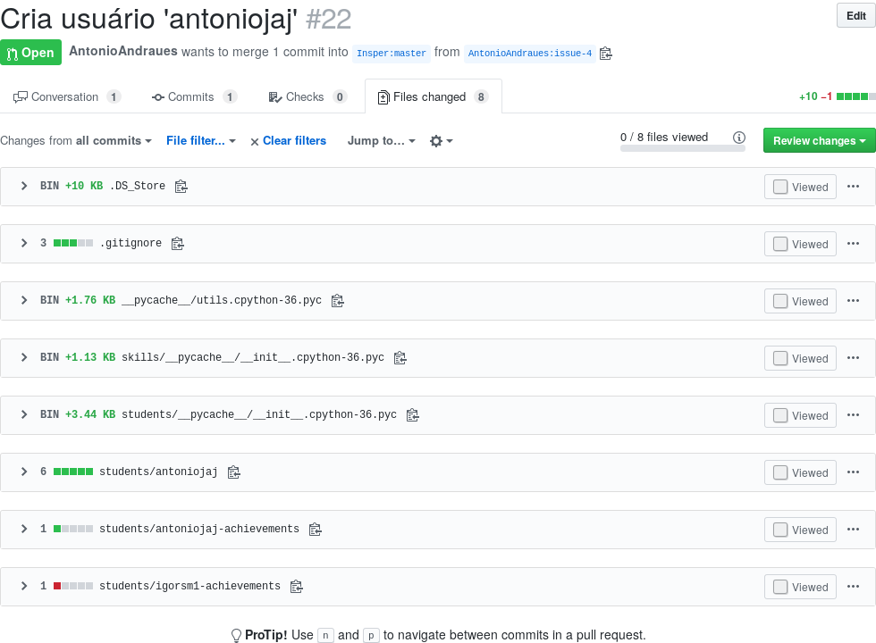
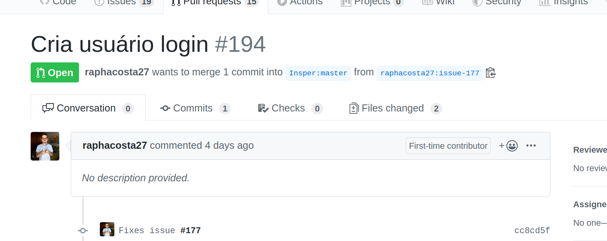
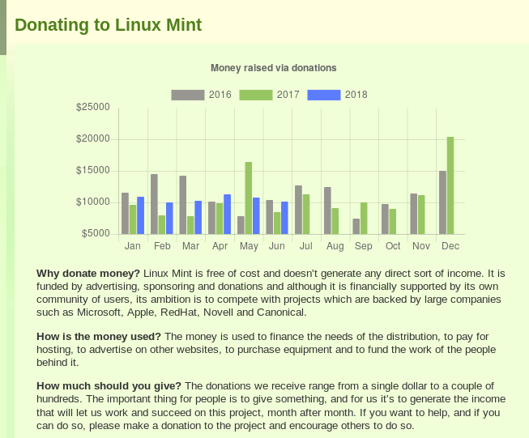

Desenvolvimento Aberto

Fluxo de trabalho distribuído e Comunidades de Software
Versão 2022/2: Fabrício Barth ( fabriciojb@insper.edu.br )
Modelo Github fork + pull request

Fonte: https://www.slideshare.net/abderrahmanebenbachir/continuous-integration-in-github
Modelo Github fork + pull request

Fonte: https://www.slideshare.net/abderrahmanebenbachir/continuous-integration-in-github
Fluxo de Trabalho: outros modelos
- Enviar patch via lista de e-mails (ex. Linux)
- Ferramentas de code review (ex. KDE - Phabricator)
- Patch é anexado no Bug Tracker (ex. Haiku, KDE)
- Não recebe contribuições externas
Revisão dos PRs da aula passada
Erros comuns
Erro 0: o arquivo login-achievements

Como consertar: Crie um novo commit com a data certa e veja o erro 2.
Erro 1: arquivos extras no PR
Erro: modificar arquivos não relacionados a sua mudança proposta.
Ideal:
- Um Pull Request deverá conter o somente os arquivos relacionados a modificação proposta.
- Cada modificação proposta está em um Pull Request separado

Erro 1: arquivos extras no PR
Como consertar: git revert cria um commit que desfaz alterações anteriores.
.svg?cdnVersion=501)
Opções extras:
--no-commit: só adiciona as modificações, mas não faz o commit. Permite desfazer parcialmente um commit.
Fonte: https://www.atlassian.com/git/tutorials/
Erro 2: PR contém mais de um commit
Erro: o PR está espalhado em vários commits.
Ideal:
- Colocar toda sua modificação em um só commit ajuda a entender o que foi modificado no PR.
- Mantém histórico limpo, com um commit por bug consertado ou funcionalidade adicionada.
- Facilita encontrar erros e desfazer a modificação caso ela seja problemática (usando `git revert')
Erro 2: PR contém mais de um commit

Erro 2: PR contém mais de um commit
Como consertar: git rebase -i master permite remover e juntar commits do branch atual que não estejam no master.

Fonte: https://www.atlassian.com/git/tutorials/
Erro 3: Mensagens de commit não descritivas

Como consertar: git commit --amend permite modificar o último commit feito.
Erro 4: Pull Request com descrição ruim

Como consertar: Só editar na interface do Github.
Consertar em casa e pedir review via Github
Lembrete: se não der push não estragou nada
Lembrete II: git log mostra seu histórico atual
Dica: se modificou commits já publicados use git push -f para sobrescrever
Nem todos os alunos que estão matriculados na disciplina fizeram a atividade da última aula!
python dev-aberto.py list-users
Comunidades de software
Discussão
Pergunta 1: quais são os softwares que vocês mais utilizam no dia a dia?
Pergunta 2: quem é o principal desenvolvedor do projeto?
Exemplo: Kernel Linux

Fundação dá suporte ao desenvolvimento do Kernel Linux e à criação de um ecossistema de software de código aberto ao seu redor.
Apoio:
- Financeiro
- Propriedade intelectual
- Infraestrutura
- Serviços e treinamento
Exemplo: Kernel Linux
Empresas que patrocinam desenvolvimento:
- Individuais (11,95%)
- Intel (10,01%)
- Red Hat (8,90%)
- Desconhecido (4,09%)
- IBM (3,79%)
- SUSE (3,49%)
- Linaro (2,96%)
- Consultores (2,96%)
- Google (2,79%)
- Samsung (2,28%)
Fonte: "2020 Linux Kernel Development Report"
Exemplo: Ubuntu

Empresa privada controla o desenvolvimento do Ubuntu. Obtem recursos via
- Doações
- Serviços de desenvolvimento e consultoria
- Treinamento
Exemplo: Gitlab

Empresa financiada até agora por VC (Venture Capital) em busca de lucro.
- Opção de planos grátis com software de código aberto
- Opção de planos corporativos com mais funcionalidades e suporte
- Instalações locais
Exemplo: Elementary

Distribuição linux comandada por uma empresa "minúscula" focada em experiência de usuário. Recursos são obtidos via
- Patrocínios individuais e por empresas
- Modelo pay-what-you-want (loja de aplicativos e sistema operacional)
- Hardware com o sistema pré-instalado

Exemplo: Linux Mint

Distribuição linux cujo objetivo é que tudo funcione direto na instalação. É considerada boa para iniciantes.



Outras fontes
 Diversas outras maneiras de conseguir suporte e financiamento
Diversas outras maneiras de conseguir suporte e financiamento
Razões para financiar (empresa)
- "Adquirir" especialistas em uma tecnologia
- Vender suporte ou consultoria
- Marketing
- Licença de software "obriga"
Nem sempre o que é financiado termina em um formato "aproveitável" por terceiros (ex: Android/Linux, TiVO)
"Tivoization is the practice of designing hardware that incorporates software under the terms of a copyleft software license like the GNU General Public License (GNU GPL), but uses hardware restrictions or digital rights management (DRM) to prevent users from running modified versions of the software on that hardware" [Wikipedia]
Razões para contribuir (indivíduo)
- Profissionais
- Reputação / Currículo
- Necessidade de negócio
- Pessoais
- Altruísmo / Ideologia
- Sensação de realização pessoal
- Exercício de criatividade
- Resolver um problema de seu interesse
Atividade: Explorando o entorno de um projeto

- Pesquisar como as comunidades de alguns projetos estão organizadas
- Produzir uma apresentação resumindo suas descobertas